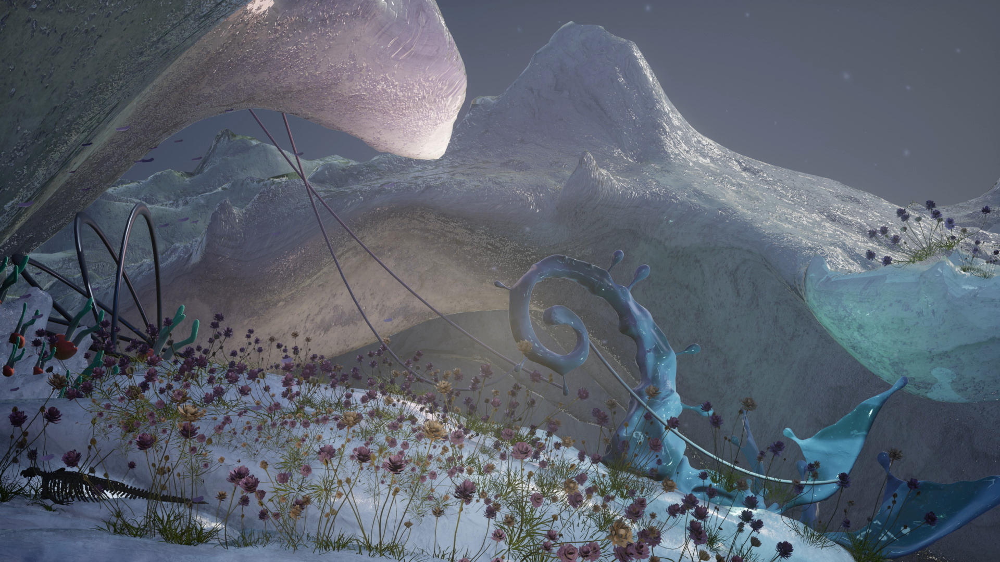
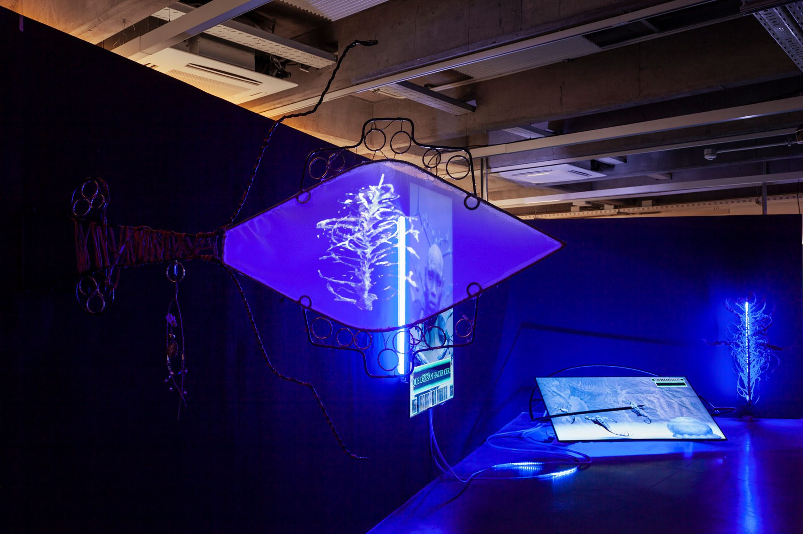
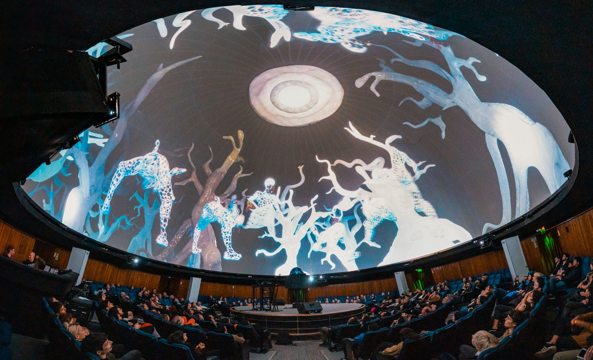

Hidrontes
Hidrontes is an audiovisual installation by sound artist QOA and Joaquina Salgado, featuring a looping video synchronized across three screens—two LED televisions and a projection. This speculative fiction envisions aquatic beings arriving on dry land to rehearse composting and care practices, learning to become co-players and co-exist in potential futures.
Exhibitions:
- March–October 2022: Dislocations: Recomposition Exercises – Curated by Jazmín Adler, Fundación Andreani, Buenos Aires, Argentina.

Concept
The material reality of the present emerges from a vast and entangled network of relationships-between humans and nonhumans, insects, fungi, waterways, and minerals. Every conscious and unconscious action materially shapes the world we inhabit today. In response, Hidrontes calls for attunement: listening deeply to our surroundings, to those with whom we share the world, and to the needs of the non-human beings with whom we coexist. By fermenting knowledge and fostering care, we must learn to inhabit landscapes that have been ravaged, contaminated and exploited by asymmetrical systems of power and extraction.The technologies we use daily—objects we relate to as prosthetic extensions, like phones—are composed of minerals extracted from the earth. As the world accelerates towards mineral-intensive consumption, it becomes urgent to trace the genealogies of these technological artifacts, acknowledging the local and global entanglements that shape our material footprint and the performative impact of our actions.
Within this world, newly emerging beings are guided by Spirituai, an entity animated through facial capture. A fabric screen in the installation displays satellite imagery of Mina Argentina Bajo de la Alumbrera, alongside a photogrammetric 3D representation of one of the plant guardians physically present in the exhibition space.
The soundscape is composed of digitally processed field recordings captured in the Yungas, Tucumán, Argentina, combined with digital synthesis and voice. As the beings dance, a fragment of a Calchaquí copla is heard in the voice of Celia Segura (1933–2015), an elder of the Indigenous Community of Amaicha del Valle, Tucumán. Her voice echoes:
"Even if they say that I am dead, I am coming back from my roots."

Our Braided Practices
Nina Corti (QOA) and Joaquina Salgado are both part of the international artist network Amplify Digital Arts Initiative. Collaborating since 2019, their work has been presented at:
- MUTEK Japan & MUTEK San Francisco (2020, online edition)
- Noviembre Electrónico Festival, Buenos Aires (2020)
- Experimental Audiovisual Cycle #27, Museo MAR, Mar del Plata, Argentina
- Fundacion Andreani, Buenos Aires 2022
- Mutek Buenos Aires, Argentina 2022
- Feed The River, Chemnitz, Germany 2024

NIVEL V – OSCILACIÓN LÍQUIDA ༼∵( Crisis de las coordenadas )∵༽
FULLDOME PROJECTION 2022Extending the exploration of Hidrontes, Nivel V – Oscilación Líquida invites us to submerge into an intra-planetary ecology of multispecies alliances. The virtual and the real entwine in a choreography of simultaneous times, aquatic resonances, and porous beings. A space where disoriented coordinates give way to fluid entanglements, dissolving boundaries between bodies, matter, and memory.
Where do we go after the vertigo?
A fulldome piece by Joaquina Salgado and QOA, presented at MUTEK Buenos Aires, Argentina.

Credits:
Visual artist:
Joaquina Salgado
Sound Artist:
QOA
Dancers:
Julieta Rampulla, Tomas Pintos